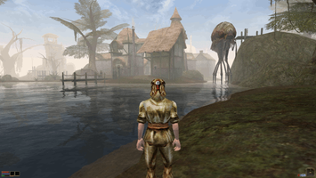
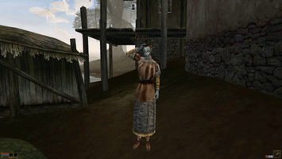
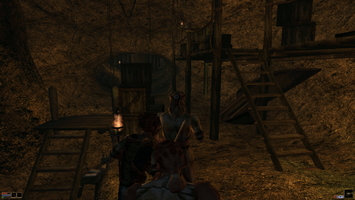
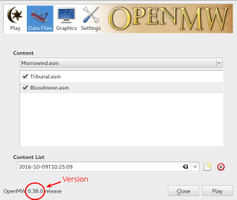

OpenMW
Dieser Artikel wurde für die folgenden Ubuntu-Versionen getestet:
Ubuntu 16.04 Xenial Xerus
Zum Verständnis dieses Artikels sind folgende Seiten hilfreich:
OpenMW  ist eine OpenSource- Reimplementierung der Engine von The Elder Scrolls III: Morrowind. Morrowind ist ein klassisches Rollenspiel, das in Morrowind, der Heimat der Dunmer und Provinz des Kontinents Tamriel auf dem Planeten Nirn spielt.
ist eine OpenSource- Reimplementierung der Engine von The Elder Scrolls III: Morrowind. Morrowind ist ein klassisches Rollenspiel, das in Morrowind, der Heimat der Dunmer und Provinz des Kontinents Tamriel auf dem Planeten Nirn spielt.
Zum Spielen wird das Originalspiel benötigt. Daneben gibt es zwei optionale Erweiterungen, Bloodmoon und Tribunal.
Die Entwicklung von OpenMW ist noch nicht abgeschlossen. Mit Version 0.40 ist die Hauptquestreihe aber funktionsfähig, sodass nur noch kleinere Fehler behoben werden.
|  |  |  |
| Das Dorf Seyda Neen | Teleri Helvi aus Seyda Neen | Flucht vor einem Kampf in einer Höhle |
Bezugsquellen¶
Das Spiel kann bei Gog.com und Steam als Download erworben werden. Außerdem gibt es CD- und DVD- Versionen. Die Game of the Year- Edition beinhaltet neben dem Hauptspiel auch beide Erweiterungen.
Installation¶
Offizielle Paketquellen¶
Das Paket kann aus den offiziellen Paketquellen installiert werden[1], wo nicht immer die neueste Version zur Verfügung steht:
openmw (multiverse)
 mit apturl
mit apturl
Paketliste zum Kopieren:
sudo apt-get install openmw
sudo aptitude install openmw
PPA (Fremdquelle)¶
Möchte man eine möglichst aktuelle Version des Spiels sicherstellen, kann man dagegen das PPA der Entwickler verwenden[2].
Adresszeile zum Hinzufügen des PPAs:
ppa:openmw/openmw
Hinweis!
Zusätzliche Fremdquellen können das System gefährden.
Ein PPA unterstützt nicht zwangsläufig alle Ubuntu-Versionen. Weitere Informationen sind der  PPA-Beschreibung des Eigentümers/Teams openmw zu entnehmen.
PPA-Beschreibung des Eigentümers/Teams openmw zu entnehmen.
Damit Pakete aus dem PPA genutzt werden können, müssen die Paketquellen neu eingelesen werden.
Das Spiel kann nach dem Freischalten der PPA-Quelle über das folgende Paket installiert werden [1]:
openmw (PPA)
mit apturl
Paketliste zum Kopieren:
sudo apt-get install openmw
sudo aptitude install openmw
Spieldaten¶
CD/DVD¶
Besitzt man die CD- oder DVD- Version, kann man den OpenMW- Launcher die Spieldateien installieren lassen, indem man im Einrichtungsassistenten die entsprechende Option auswählt. Wichtig ist aber die Nutzung der mount Optionen udf und unhide. Beispielsweise so:
sudo mount -t udf -o ro,unhide /dev/sr0 /mnt
Dann nur mit dem Installierassistenten das Verzeichnis /mnt als Quelle auswählen und ab dafür. Ausgehängt wird das dann wieder mit:
sudo umount /mnt
Gog.com¶
Besitzer der Gog- GOTY- Edition benötigen das Programm innoextract, um die Spieldateien aus dem Installer zu extrahieren.
innoextract (universe)
mit apturl
Paketliste zum Kopieren:
sudo apt-get install innoextract
sudo aptitude install innoextract
Nachdem der Installer von der GOG- Webseite heruntergeladen wurde, kann man ein Terminal öffnen[5], ins entsprechende Verzeichnis navigieren[6](z.B. ~/Downloads) und den Inhalt mit folgendem Befehl in den Ordner app extrahieren:
innoextract setup_tes_morrowind*
Danach kann man dem Ordner app aussagekräftiger umbenennen(z.B. TES_III) und an einen passenden Ort verschieben. Im Unterordner Data Files befinden sich die benötigten Spieldateien.
Steam¶
Um die Steamversion herunterzuladen, benötigt man neben einem installierten Steam-Client das offizielle Kommandozeileninterface SteamCMD, das aus den Paketquellen installiert werden kann.
steamcmd (multiverse)
mit apturl
Paketliste zum Kopieren:
sudo apt-get install steamcmd
sudo aptitude install steamcmd
Nachdem steamcmd erfolgreich installiert wurde, kann man ein Terminal öffnen[5], sich mit folgendem Befehl mit dem Steam- Client anmelden und ihm vorgaukeln, dass man Windows verwendet, sodass Steam das Spiel herunterlädt.
steamcmd +Login BENUTZERNAME PASSWORT +@sSteamCmdForcePlatformType windows +app_update 22320 +quit
Die Variablen BENUTZERNAME und PASSWORT sind dabei mit den entsprechenden Steam- Logindaten zu ersetzen. Der Ordner Morrowind befindet sich nach erfolgreichem Download im Verzeichnis ~/.steam/steam/steamapps/common, wo auch die anderen Steam- Spiele liegen. Im Unterordner Data Files befinden sich die benötigten Spieldateien.
Benutzung¶
|  |
| OpenMW-Launcher |
Programmstart¶
Nachdem man sich aus Ubuntu ausgeloggt und wieder eingeloggt hat, kann das Spiel über das Startersymbol OpenMW Launcher gestartet werden[3]. Alternativ kann man folgenden Terminalbefehl verwenden[3]:
openmw-launcher
Nach dem ersten Start wird ein Konfigurationsassistent gestartet, der Informationen über die Version des Originalspiels sammelt. Zudem muss man die originale Morrowind.esm- Datei auswählen.
Über den geöffneten OpenMW- Launcher lässt sich dann The Elder Scrolls III: Morrowind starten.
Steuerung¶
| OpenMW | |||
| Taste | Funktion | Taste | Funktion |
 | Auswählen, Angreifen |  | Inventar öffnen |
 | Laufen | Ansprechen, Plündern | |
| E | Springen | F | Kampfbereitschaft |
| ⇧ | Rennen | Tab ⇆ | Egoperspektive an/aus |
| J | Tagebuch öffnen | T | Rasten |
| F1 | Kurztasten | F3 | FPS anzeigen |
| F5 | Schnellspeichern | F9 | Schnellladen |
Problembehebung¶
Die Reihenfolge der .esm- Dateien ist verkehrt¶
Falls die Erweiterungen vorhanden sind, müssen die Dateien des Originalspiels in folgender Reihenfolge geladen werden:
Morrowind.esm
Tribunal.esm
Bloodmoon.esm
Sollte die verkehrte Reihenfolge das Starten des Spieles verhindern, kann man sie ganz am Ende der Datei ~/.config/openmw/openmw.cfg mit einem Texteditor korrigieren[4]
content=Morrowind.esm content=Tribunal.esm content=Bloodmoon.esm
und den OpenMW Launcher neu starten.
Infobox¶
| OpenMW | |
| Genre: | RPG |
| Sprache: |   und weitere und weitere |
| Erscheinungsjahr: | The Elder Scrolls III: Morrowind selbst ist am 1. Mai 2002 erschienen. |
| Systemvoraussetzungen: | Shader Model 3 - kompatible Grafikkarte |
| Unterstützte Betriebssysteme: | Linux, OS X, Windows |
| Medien: | Download, DVD, CD |
| EAN von TES III: Morrowind - GOTY Edition: | 5050740021167 |
| Läuft mit: | nativ |


- Erstellt mit Inyoka
-
 2004 – 2017 ubuntuusers.de • Einige Rechte vorbehalten
2004 – 2017 ubuntuusers.de • Einige Rechte vorbehalten
Lizenz • Kontakt • Datenschutz • Impressum • Serverstatus -
Serverhousing gespendet von